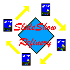

 SlideShow Refinery version
6.0.2.10
| Shots and Stuff | Feature List | Purchase | Downloads |
|---|---|---|---|
Click on the hot spot to view key feature list. |
To buy ($19.95) SlideShow-Refinery (SSR) click on icon below | SlideShow-Refinery version 6.0.2.10 |
Create, view, print, distribute, and manage digital slide show presentations. Supports most common image, sound and multimedia file formats (see features for list of supported files).
Slide processing features include:
Audio features include:
Also included:
Advanced features include:
SlideShow-Refinery trial version will process 10 (version 5) and 24 (version 6) images per slide show. Because of licensing requirements the trial version's MPEG output is disabled... SlideShow-Refinery operates under Windows 95/98/NT/2000/ and XP and the registration fee is $24.95. Click eSellerate icon below to visit our web store to buy SlideShow-Refinery and get immediate access to full range of features.
Click here to download SSR version 5.1.2.12
Upgrade pricing policy... in major version upgrades are free. Currently, anybody with version 6 can download for free upgrades until version 7 is released (probably in late 2005). If you own version 5, especially if you have just recently purchased version 5, contact me at <support@slideshow-refinery.com> for upgrade policy/instructions.
| Major Version | Minor Version | Release | Build |
| 6 | 0 | 1 | 1 |
Version 5.0.1.2.11 makes minor modification allowing SyncLine SlideShows forward compatibility with Version 6.
Version 5.0.1.2.12 corrects issues related to slide-mismatchs in slideshow-editor. See note Version 6.0.2.2 below for description of problem.
Version 6.0.1.2. Adds double click zoom to viewer, support for AVI/MPEG clips to be used as slides, optional tool bar for full screen display, fixed issues associated with zip encryption.
Version 6.0.1.3. This version is a "must have" if you are using linked audio. Corrects issues associated with linked audio narration on a drive other that the logged drive. Corrects linkage issues associated with SlideShow Editor, audio link editing.. Adds two new options under advanced save: One for path stripping when image file is on the same path as the pss file, the other strips all paths from the pss file. The two new options complement the original "normal" save option which always adds the path, needed or not. The options were added so that fast, non-copy saves could be applied to pss files without changing the original non-pathed contents.
Version 6.0.1.4 ... Corrects issues related to syncline editing. Version 6.0.1.1 - 6.0.1.3 if only one audio clip was used, and it was moved before and not saved, and a syncline was started, the syncline index was not correctly processed. Additonally, psscd, psscd+, and psscdv5 have been patched to correctly process pss file format 2.0 synclines.
Version 6.0.1.5 added easy to access update links.
Version 6.0.1.6 Improves screen switching between fullscreen and normal. Cleans up some inconsistent behavior with the full screen play menu selection. Corrects issues related to slide show save on win 2000 machines. Sometimes, if only new slides were imported, and the slideshow was saved with copy option, the directory browse component would issue an untrapped error, aborting the save action. Additionally, an issue related to composite printing, last page of images didn't print, has been corrected.
Version 6.0.1.7 Corrects issues related to multiple copy saves to same folder and resize copies that include sound slides. The latter was introduced in version 6 when fast copy component was incorporated.
Version 6.0.1.9... Clears up some issues related to image browsing function and some inconsistencies associated with text annotation display processing when switching between normal and full screen modes.
Version 6.0.1.10 Corrects an issue arose in version 6.0.1.9 related to slideshows with annotations. This is an important update and corrects what I consider a significant problem.
Version 6.0.1.11 Adds save wizard to help you decide which slideshow save format to use.
Version 6.0.1.12 Improves print formatter performance with defaults allowing images to expand to fit available space. Optionally, the output can be forced to keep image at original resolution or below. Corrects issue associated with drag and drop of thumbnails when using List Manager.
Version 6.0.2.1 recently it was discovered that authorization level was not properly processing. As a result, MPEG output would be disabled even with entry of proper password. Password associated issues related to MPEG have been resolved. The other resolved issue relates to occasional shimmering in MPEG movies. Previous releases stored reference frames used during MPEG conversion in JPEG format. With this release, buffered reference frames are saved in lossless PNG format and, as a result, the MPEG/VCD output quality is significantly improved.... If you are doing VCD/MPEG work. this download is worth the time it takes to do it.
Version 6.0.2.2 Improved Syncline function in the following areas: (1) Auto distributing images on syncline immediately following work space slide move cause some wrong images to show up in the syncline slide viewer strip. The issue did not affect slideshow output. Issue fully resolved, links to hold list rather than current display list were being used in slide viewer strip update. (2) Issues associated with operation of syncline preview audio control bar and preview button, resulting in malfunction of replay and relocate audio play position. Issue resolved, I disabled automatic control functions and forced explicit processing of media player controls.
Version 6.0.2.3. Corrects display issues associated with preview during AVI generations. The issued did not impact AVI generation and has been corrected.
Version 6.0.2.4 Adds support for persistant selection list pocessing... Browse though multiple slideshows and folders selecting images as you go. Save selected images as PLS file for processing with ThumbNail Refinery or as a slideshow (pss file). Adds slide property dialog, including EXIF data if available, you can view from the slideshow browser screen.
Version 6.0.2.5. Issue: version 6 would strip paths from syncline elements and, if the elements were not located in the same folder as the PSS file, the syncline slides would be dropped during load because they could not be located.. Corrective action: paths are now included in syncline elements in the same manner as other slides, as specified in Dependent Slideshow save options. TWAIN save to JPG now uses EXIF JPEG tagging each scan with the system time at the time of scan... very handy for keeping track of scanned slides.
Version 6.0.2.6. Issue: synclines will not save as a result of a pathing problem introduced in version 6.0.2.5. Corrective action was taken to insure that synclines save correctly. Syncline annotations can now added using syncline editor.
Version 6.0.2.7. Changed Save menu option labels to make associated actions more clear.
Version 6.0.2.9 standard slideshow that are converted to AVI+ now incorporate dwell time into the frame count computation. This means slide display time in AVI+ files converted from an SSR slideshow will closely resemble the display time seen during SSR playback of the original slideshow.
Version 6.0.2.10 adds Batch Copy Utility
Free Download... SlideShow-Refinery Viewer Version 5
SlideShow-Refinery newest and most powerful freeware slideshow viewer and image browser is now availble for download. SSR Viewer Version 5 supports all of SlideShow Refinery's slideshow formats including synclines, narrations, background audio and zip-encrypted. In addition, dynamic image quality processing is fully supported and ... YOU ASKED FOR IT ... 2000+ slide to slide transitions. Best of all SSR Viewer is free for you to use and send along with your SlideShow-Refinery slideshows. click here to download: SSR Viewer Version 5 (ver 5.0.3.3)
Preview PhotoPac Plugin HTML slide show.
Review slide show authoring methods
Digital cameras and SlideShow-Refinery
SlideShow Refinery slide show (pss file) file structure
Free Free Free Portable slideshow viewer: pssle
Photo-SideShow multi-media slideshow viewer and JPG image browser (version 1.0.6 and above plays slideshows that include AVI files): psscd+ (ver 1.0.6.9)
SlideShow-Refinery Viewer version 5. psscdv5 (version 5.0.3.3) Plays slideshows created with Slideshow Refinery. Zip, Zip Encrypted, Synclines, multi media ect.